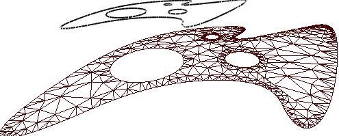

Flat face with holes.
Let's create a flat face with a spline as an outer contour and three circles as holes.
The code of creating the spline as an outer contour:
SG_POINT tmpPnt;
SG_SPLINE* spl2 = SG_SPLINE::Create();
tmpPnt.x = -1.0; tmpPnt.y = -3.0; tmpPnt.z = 0.0;
spl2->AddKnot(tmpPnt,0);
tmpPnt.x = -3.0; tmpPnt.y = 0.0; tmpPnt.z = 0.0;
spl2->AddKnot(tmpPnt,1);
tmpPnt.x = -1.0; tmpPnt.y = -1.0; tmpPnt.z = 0.0;
spl2->AddKnot(tmpPnt,2);
tmpPnt.x = 0.0; tmpPnt.y = 1.0; tmpPnt.z = 0.0;
spl2->AddKnot(tmpPnt,3);
tmpPnt.x = -1.0; tmpPnt.y = 4.0; tmpPnt.z = 0.0;
spl2->AddKnot(tmpPnt,4);
tmpPnt.x =3.0; tmpPnt.y = 1.0; tmpPnt.z = 0.0;
spl2->AddKnot(tmpPnt,5);
tmpPnt.x =2.0; tmpPnt.y = -3.0; tmpPnt.z = 0.0;
spl2->AddKnot(tmpPnt,6);
tmpPnt.x =1.0; tmpPnt.y = -1.0; tmpPnt.z = 0.0;
spl2->AddKnot(tmpPnt,7);
tmpPnt.x =1.0; tmpPnt.y = -4.0; tmpPnt.z = 0.0;
spl2->AddKnot(tmpPnt,8);
spl2->Close();
sgCSpline* spl2_obj = sgCreateSpline(*spl2);
SG_SPLINE::Delete(spl2);
sgGetScene()->AttachObject(spl2_obj);
spl2_obj->SetAttribute(SG_OA_COLOR,0);
spl2_obj->SetAttribute(SG_OA_LINE_THICKNESS, 1);
Holes:
sgC2DObject* holes[3];
SG_CIRCLE cirGeo;
SG_POINT cirC = {0.8, 1.0, 0.0};
SG_VECTOR cirNor = {0.0, 0.0, 1.0};
cirGeo.FromCenterRadiusNormal(cirC,0.8, cirNor);
holes[0] = sgCreateCircle(cirGeo);
sgGetScene()->AttachObject(holes[0]);
holes[0]->SetAttribute(SG_OA_COLOR,0);
holes[0]->SetAttribute(SG_OA_LINE_THICKNESS, 1);
cirC.x = 1.6; cirC.y = -1.0;
cirGeo.FromCenterRadiusNormal(cirC,0.2, cirNor);
holes[1] = sgCreateCircle(cirGeo);
sgGetScene()->AttachObject(holes[1]);
holes[1]->SetAttribute(SG_OA_COLOR,0);
holes[1]->SetAttribute(SG_OA_LINE_THICKNESS, 1);
cirC.x = 0.0; cirC.y = -1.0;
cirGeo.FromCenterRadiusNormal(cirC,0.4, cirNor);
holes[2] = sgCreateCircle(cirGeo);
sgGetScene()->AttachObject(holes[2]);
holes[2]->SetAttribute(SG_OA_COLOR,0);
holes[2]->SetAttribute(SG_OA_LINE_THICKNESS, 1);
Constructing a face with holes:
sgC3DObject* fcO = (sgC3DObject*)sgSurfaces::Face((const sgC2DObject&)(*spl2_obj),
(const sgC2DObject**)(&holes[0]),3);
sgGetScene()->AttachObject(fcO);
fcO->SetAttribute(SG_OA_COLOR,50);
Then let's move the obtained surface:
SG_VECTOR transV1 = {-5,0,0};
fcO->InitTempMatrix()->Translate(transV1);
fcO->ApplyTempMatrix();
fcO->DestroyTempMatrix();
See also:
sgGetScene sgCScene::AttachObject sgCObject::SetAttribute
Illustration:
